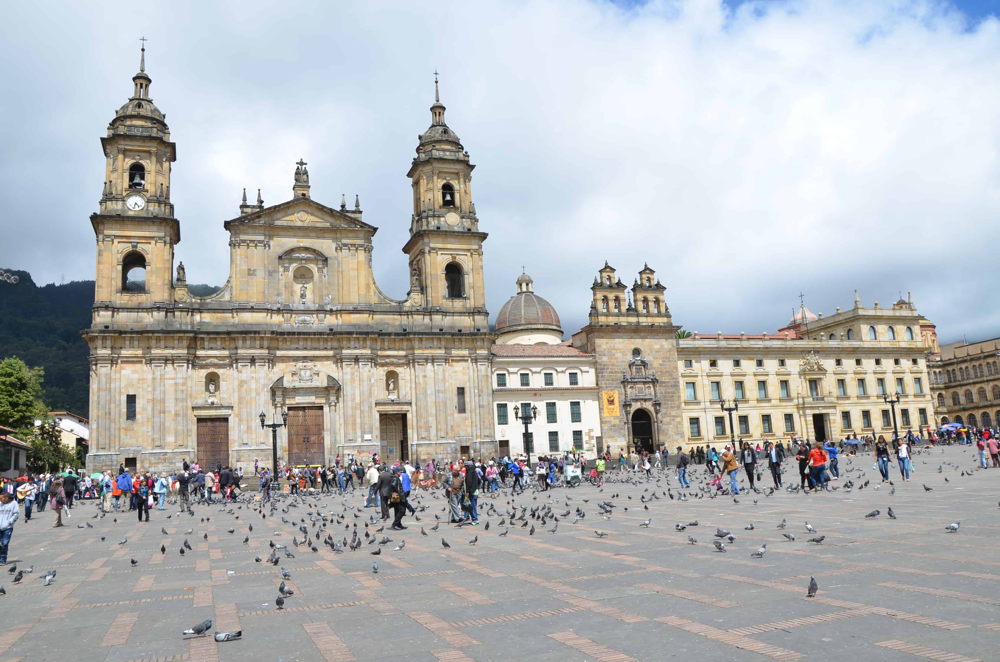
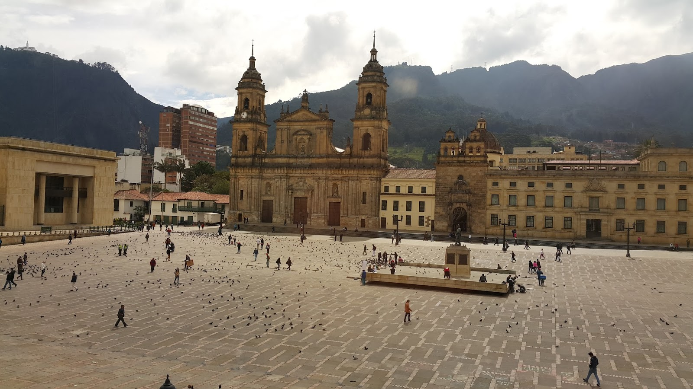

La Plaza de Bolívar es el corazón histórico y político de Bogotá. Rodeada de edificaciones emblemáticas como el Capitolio Nacional, la Catedral Primada y el Palacio de Justicia, es un lugar imperdible para conocer el centro de la vida cívica de Colombia.
Ubicación
Dirección: Cra. 7 #11-10, Bogotá, Colombia.
Coordenadas: 4.5981° N, 74.0760° W
¿Cómo llegar?
- A pie: Fácil acceso desde cualquier punto del centro histórico.
- TransMilenio: Estaciones Museo del Oro, Las Aguas o Universidades.
- Bus: Rutas SITP por la Carrera 7 y la Avenida Jiménez.
Horarios
- Abierta al público: Todos los días, 24 horas.
- Recomendado: Visitar entre 7:00 a.m. y 9:00 p.m. por seguridad y mejor experiencia.
Entrada
- 🔸 Acceso libre: Entrada gratuita para todo el público.
- 🔸 Eventos especiales: Algunos eventos o exposiciones pueden tener costo.

